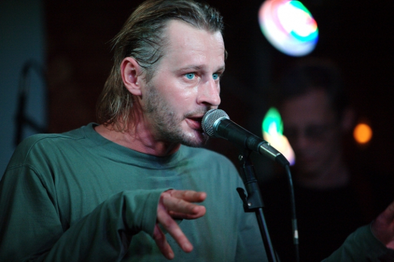

11 жовтня 2021 р раптово помер співак, артист людина мистецтва - Михайло Барбара...Його енергетика на концертах була неймовірна, до неї можна було доторкнутися.
Його ранішні концерти в дворику Ратуші, то був концентрат краси, драйву і музики серед своїх, але абсолютно тобі невідомих людей. Вони просто любили Мертвий півень.
Місько Барабара познайомив мене з новою українською рок-музикою. І відкрив поезію, бо Барабара переспівав багато українських поетів.
Ось список моїх улюблених пісень